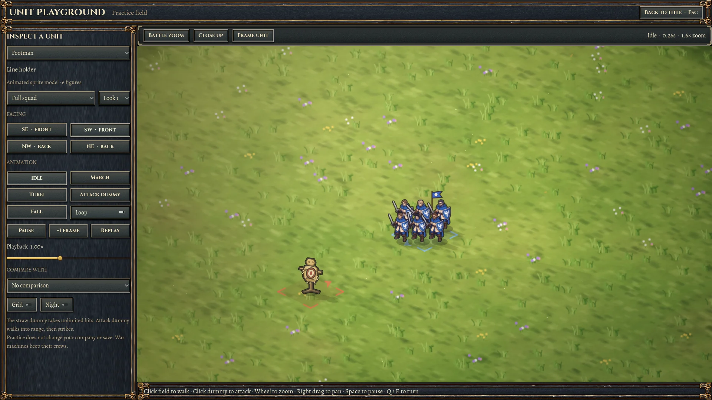
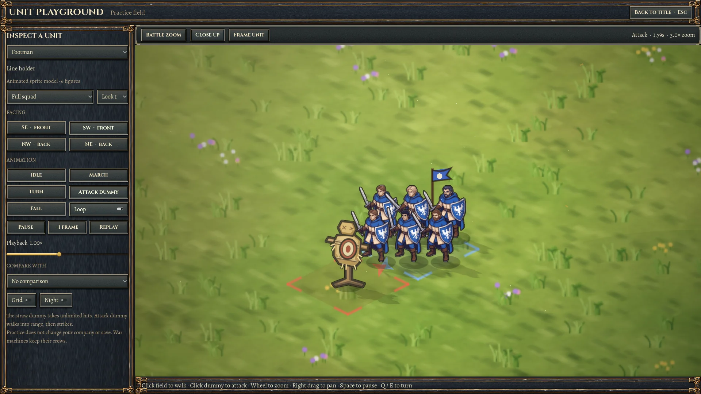
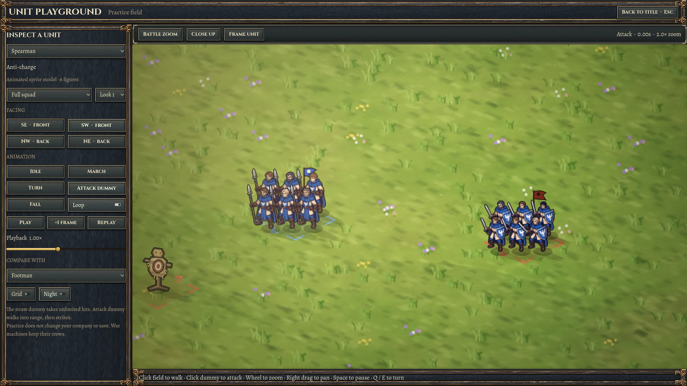
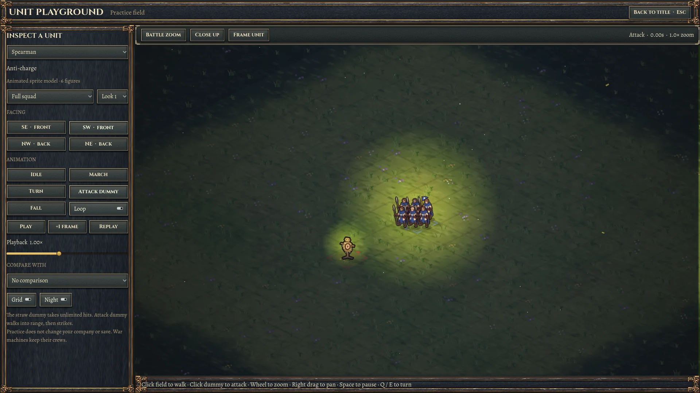

A field for checking your units
Open Unit Playground on the game's title screen. Choose any of the 20 current units, inspect its appearance and facings, and replay its existing animations on a simple grass field. Click the straw training dummy to walk into range and attack it as often as you like.
The field runs independently of your company. The dummy survives every hit, there are no turn limits, and leaving the playground does not change your save. Models and movement use the production battle renderer.




Approach and attack
Controls
| Control | Use |
|---|---|
| Unit, Look 1–6 | Choose a current unit type and appearance variant. |
| Full squad / Single figure | Inspect formation or individual details. Engines retain their crews. |
| Click field / click dummy | Walk to a tile, or approach and attack the invulnerable target. |
| Idle, March, Turn, Attack dummy, Fall | Replay the game's existing animation states. Toggle Loop for repetition. |
| Space, +1 frame, Replay | Pause, step exactly 1/60 second, or return the chosen animation to its start. |
| Playback slider | Slow down to 0.25× or speed up to 2×, locally to this field. |
| Q / E or facing buttons | Inspect all four directional views. |
| Wheel / right or middle drag | Zoom from 0.4× to 5× and pan. Use Frame unit to recenter. |
| Compare with / Grid / Night | Compare scale, ground contact and lighting. |
| Esc / Back to title | Leave the field. Reopening creates a clean practice session. |
What this version covers
This is an inspection tool for the current sprite models. It does not edit models or author new animation clips. Attack previews use each unit's ordinary melee, ranged or magic-bolt attack; special abilities are not separate clip buttons. Combat audio is quiet during inspection. Any sliding, overlap or pose issues visible here are the current production animation and can be reviewed using pause and frame stepping.
Verification and editable sources
Native input, roster, repeated attacks, save isolation and desktop layout checks are recorded in the review log. Captures use the actual Godot GL Compatibility renderer. Agent verification is separate from your visual acceptance.
The quick suite completed with 372 passed, 1 failed, 10 skipped. All four playground regression cases passed. The remaining failure is test_audio::test_a_marching_squad_is_one_tread, reporting a shared headless shader compiler error in the existing unit-outline shader. The same playground cases pass with the native GL renderer. The guide was checked at 1440- and 1000-pixel desktop widths in dark and light themes, including image preview/download, local links, and video playback.

Direct launch from the Godot project folder: tools/godot.sh --path . -- --playground.